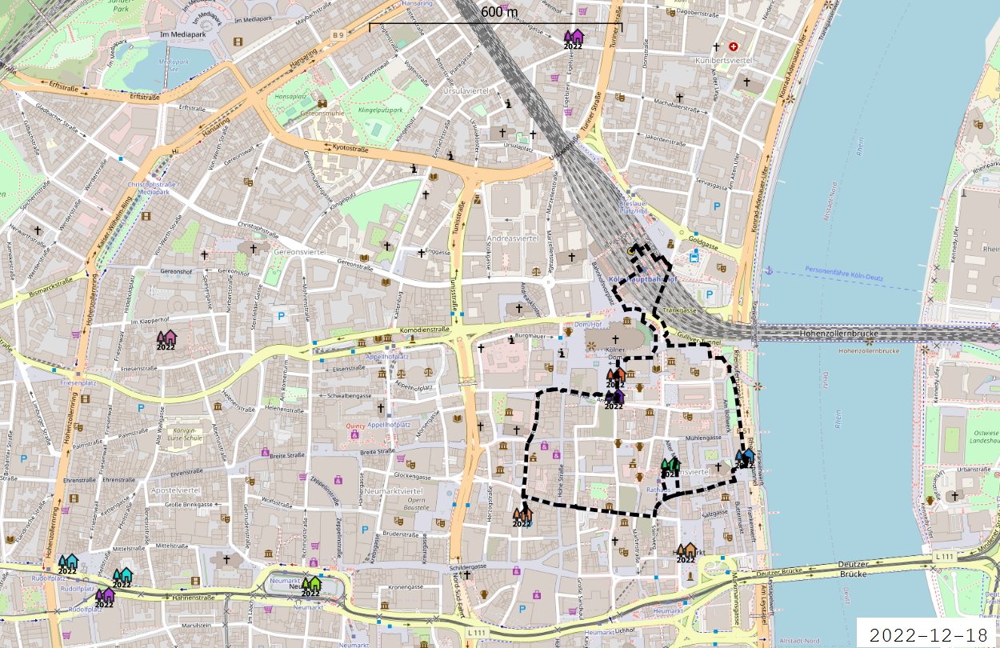
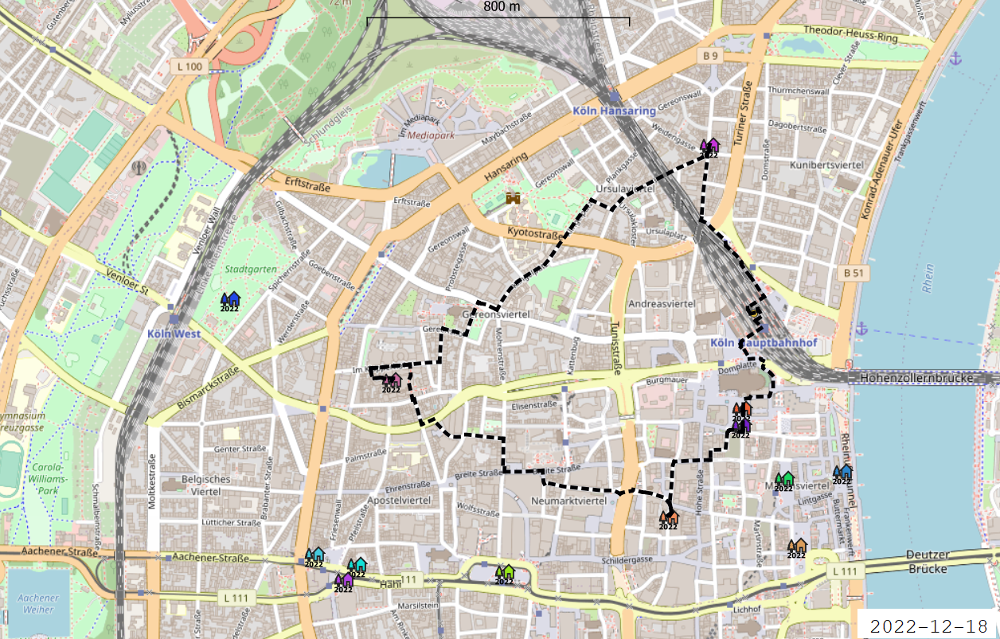
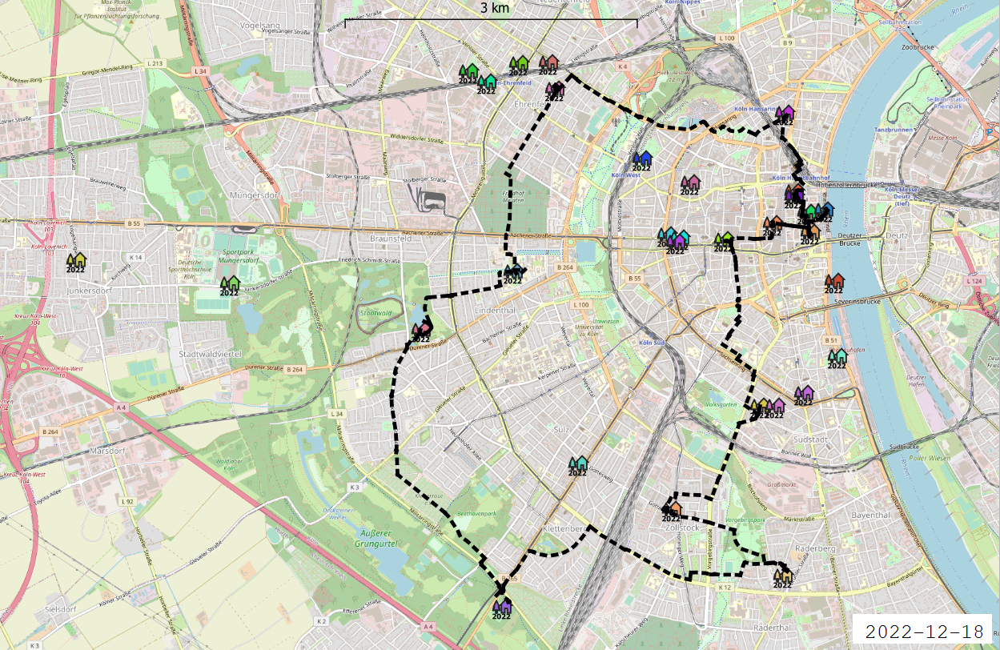

Besonders während der Covid-Pandemie erfreuten sich Glühweinrouten zunehmend größerer Beliebtheit. Beginnend an einem bevorzugten Weihnachtsmarkt oder Lokal der Wahl wird ein wärmendes Getränk erstanden und den Becher fest umschlossen geht es auch schon zur nächsten Location.
Die kleinste der hier vorgeschlagenen Routen dauert nur etwa 30 Minuten und führt entlang von fünf Weihnachtsmärkten rund um den Kölner Hauptbahnhof. Wunderbar geeignet für die Arbeitspause oder für all die, die es zwischen Alltagstrubel und Geschenkestress etwas eiliger haben.
 Kölner Hauptbahnhof → Weihnachtsmarkt am Kölner Dom → Adventsdorf am Dom → Rooftop XMAS → Markt der Heinzel → Advent auf dem RheinDie beliebte 60 Minuten-Route ist perfekt geeignet, um den Feierabend einzuläuten und sich bei ein paar gemütlichen Getränken etwas die Beine zu vertreten.
 Kölner Hauptbahnhof → Winterzauber Eigelstein → Holy Shit Shopping → Rooftop XMAS → Adventsdorf am Dom → Weihnachtsmarkt am Kölner DomFür alle, die die Winterzeit bei ausladenden Spaziergängen genießen, empfiehlt sich die zweistündige Route entlang des Kölner Hansarings und mit einem Abstecher in den leuchtend dekorierten
Stadtgarten.
Wer einen weiten Weg auf sich nimmt, soll für diesen auch belohnt werden. Gerade für Weihnachtsmarktfreunde aus ganz Deutschland empfiehlt sich die fünfstündige Glühweinroute mit Start und Ende am Kölner Hauptbahnhof. Nicht-Kölner*innen erleben die Stadt, ihre Weihnachtsmärkte und die vielen einzigartigen Veedel auf besonders authentische Weise.
 Kölner Hauptbahnhof → Winterzauber Eigelstein → Hofweihnachtsmarkt in der Körner Straße → Winterdorf Karl-Schwering-Platz → Winterzauber am See → Veganer Weihnachtsmarkt → Weihnachtsmarkt für Thal und Berg → X-MAS Bazar Salon Fadenschein → Der kleinste Weihnachtsmarkt der Stadt → Weihnachtsmarkt der Engel → Rooftop XMAS → Markt der Heinzel Winterlandschaft → Advent auf dem Rhein → Markt der Heinzel Kunsthandwerk → Adventsdorf am Dom → Weihnachtsmarkt am Kölner Domcreated with
Offline Website Builder .